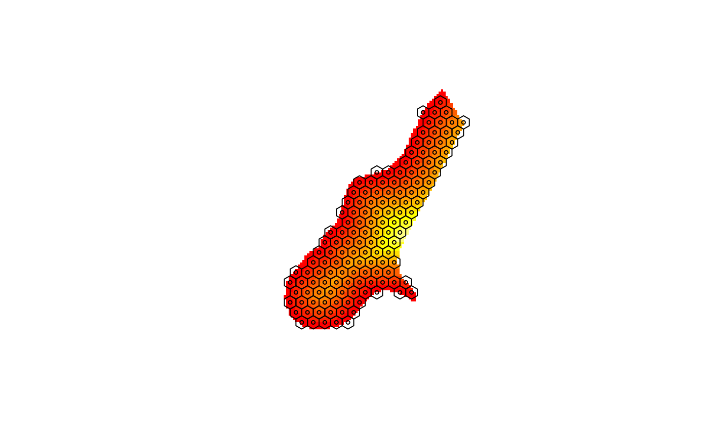

as.SpatialPolygons.GridTopology.RdConverts grids of regular rectangles into a SpatialPolygons object, which can be transformed to a different projection or datum with spTransform in package rgdal. The function is not suitable for high-resolution grids. The ordering of the grid cells is as in coordinates() of the same object, and is reported by IDvaluesGridTopology.
as.SpatialPolygons.GridTopology(grd, proj4string = CRS(as.character(NA)))
IDvaluesGridTopology(obj)
as.SpatialPolygons.SpatialPixels(obj)
IDvaluesSpatialPixels(obj)
HexPoints2SpatialPolygons(hex, dx)as.SpatialPolygons.GridTopology and as.SpatialPolygons.SpatialPixels return a SpatialPolygons object;
IDvaluesGridTopology and IDvaluesSpatialPixels return a character vector with the object grid indices.
GridTopology, SpatialPixels, SpatialPolygons
spTransform in package rgdal
library(lattice)
grd <- GridTopology(cellcentre.offset=c(-175,55), cellsize=c(10,10), cells.dim=c(4,4))
SpP_grd <- as.SpatialPolygons.GridTopology(grd)
plot(SpP_grd)
text(coordinates(SpP_grd), sapply(slot(SpP_grd, "polygons"), function(i) slot(i, "ID")), cex=0.5)
trdata <- data.frame(A=rep(c(1,2,3,4), 4), B=rep(c(1,2,3,4), each=4),
row.names=sapply(slot(SpP_grd, "polygons"), function(i) slot(i, "ID")))
SpPDF <- SpatialPolygonsDataFrame(SpP_grd, trdata)
spplot(SpPDF)
data(meuse.grid)
gridded(meuse.grid)=~x+y
xx = spsample(meuse.grid, type="hexagonal", cellsize=200)
xxpl = HexPoints2SpatialPolygons(xx)
image(meuse.grid["dist"])
plot(xxpl, add = TRUE)
points(xx, cex = .5)

if (FALSE) { # \dontrun{
spplot(aggregate(as(meuse.grid[,1:3], "SpatialPolygonsDataFrame"), xxpl,
areaWeighted=TRUE), main = "aggregated meuse.grid")
} # }